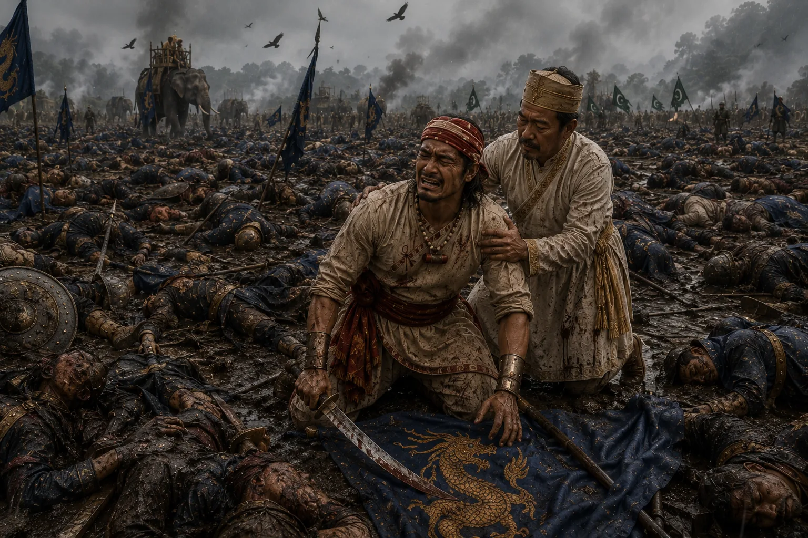

The Tragic Battle of Alaboi
August 1669 · Against the Mughal Empire

Compelled by Chakradhwaj to engage Ram Singh's cavalry on open plains, 10,000 Ahom braves perish in a single day; Lachit weeps bitterly for his fallen soldiers.
Sources have not yet been catalogued for this record.
People: Chakradhwaj Singha (Supangmung), Lachit Borphukan, Ram Singh I of Amber
Open this scene in the interactive archive · Follow this event on MAP